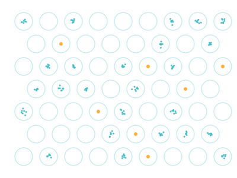
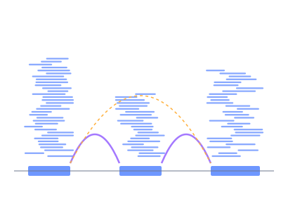
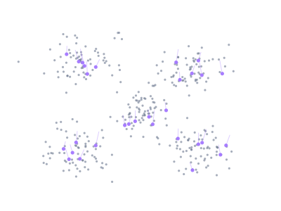
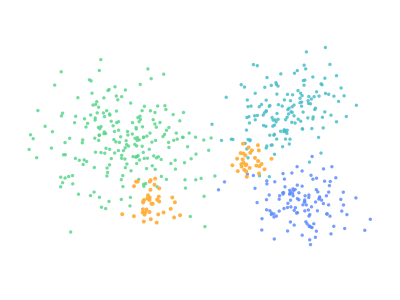

Research
The Srivastava Lab is a technology and computation group working on post-transcriptional regulation of cell state. We build BenchDrop-seq — a benchtop, microfluidics-free platform for isoform-resolved single-cell RNA-seq — and the Bagpiper pipeline that turns long reads into isoform × cell counts. We apply both to two diseases we take equally seriously: drug resistance in NRAS-mutant melanoma, and immune dysregulation in multiple sclerosis and EBV infection.
The Srivastava Lab builds BenchDrop-seq, a microfluidics-free benchtop platform that combines PIP-seq single-cell capture with Oxford Nanopore long-read sequencing. It runs on any standard lab bench without a dedicated instrument, puts isoform-level single-cell transcriptomics within reach of any group with a thermocycler, and extends naturally to chromatin accessibility with PIP-ATAC. Every protocol is open, reproducible, and engineered to scale from pilot experiments to atlas-scale immune profiling.

Long-read single-cell data is computationally distinct from short-read data: barcodes drift, reads disagree about which isoform they came from, and UMI deduplication has to honour splice-junction evidence rather than 3′ anchor alone. Bagpiper handles these problems end-to-end: spacer-anchored barcode recovery, junction-based read assignment, expectation-maximization multi-mapping resolution, and principled isoform × cell count matrices. The result is a reproducible path from raw Nanopore signal to isoform-resolved quantification that downstream analyses can actually trust.

Isoform-level measurements only become interpretable when they sit alongside gene-level atlases, chromatin state, and surface-protein markers. The lab builds two-layer annotation strategies that transfer cell identity from established short-read references onto long-read BenchDrop-seq data, and multimodal integration frameworks that align transcriptome, chromatin, and isoform information into a single coherent state per cell. These methods make BenchDrop-seq datasets immediately comparable to existing immune and tumor atlases, without forcing users to choose between depth and breadth.

The lab runs two biological programs side by side rather than ranking one over the other. In cancer, BenchDrop-seq is applied to NRAS-mutant melanoma to identify the drug-tolerant persister states that survive pan-RAS inhibition and to track the RRAS isoform switching that accompanies resistance, in collaboration with the Villanueva Lab at Wistar.
In autoimmunity, the same pipeline profiles multiple sclerosis patient immune cells captured with Parse Biosciences and EBV-driven immune dysregulation in ex vivo PBMC models, asking where splicing rewires T cell and B cell fate decisions — in collaboration with the Lieberman Lab at Wistar. Cancer and autoimmunity are treated as two windows onto the same underlying question: how post-transcriptional regulation decides cell state.

Foundations — not active Wistar directions
Tools developed during Avi’s graduate work with Rob Patro (salmon, alevin, alevin-fry, RapMap, Terminus) and postdoctoral work with Rahul Satija (Seurat v5, Signac, scCUT&Tag-pro) are widely used across the single-cell community and remain foundational to the field. They are not active research directions of the Srivastava Lab at Wistar — the lab’s independent program is the four pillars above. See publications for the full record.
Collaborations
Translational single-cell biology is a team sport. We share experimental systems, clinical samples, and analytical problems with groups that ask complementary questions.
Publications
For a complete list of publications from the Srivastava Lab and its members’ prior work, see the publications page.
View all publications →